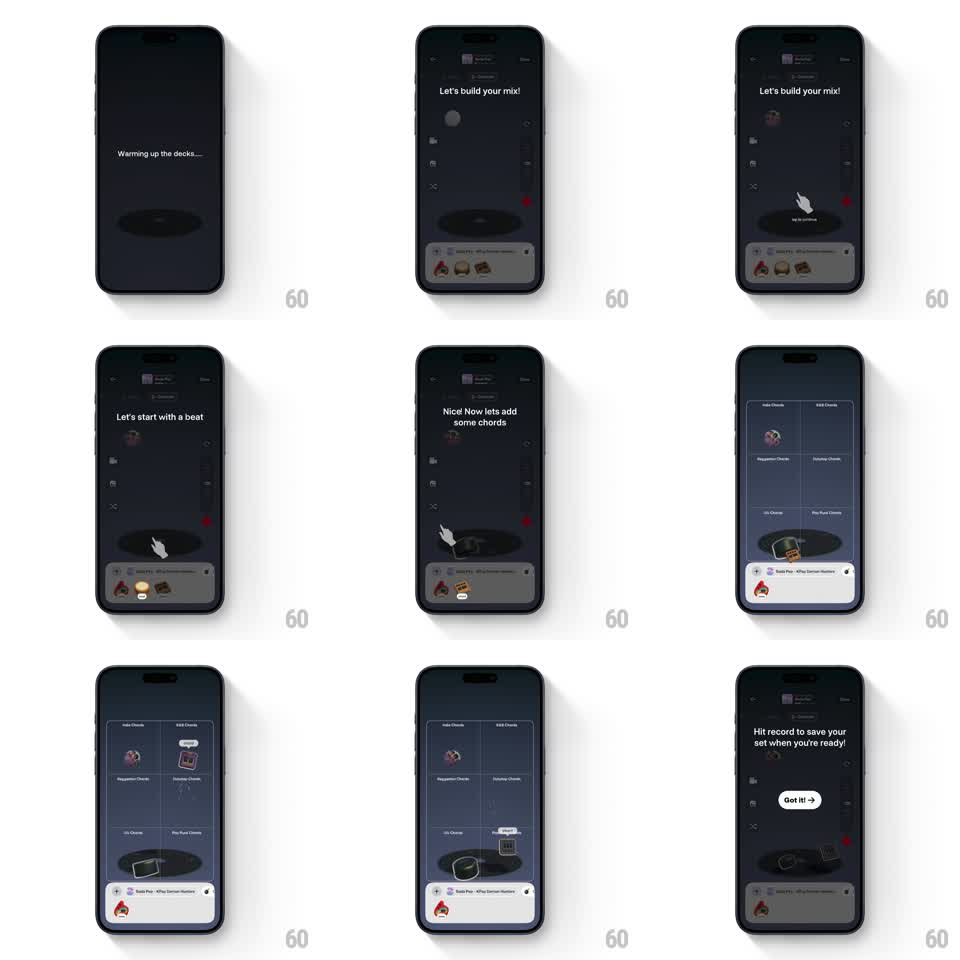

Media
Frame-by-frame

Rebuild this interaction 1:1: Bop's onboarding coachmarks - after a "Warming up the decks..." loader, an animated hand cursor guides the user to tap-and-hold instrument tiles in the tray and drag them onto the turntable, stepping through "Let's build your mix!", "Let's start with a beat", "Nice! Now lets add some chords", and "Hit record to save your set".

Rebuild this interaction 1:1: Bop's onboarding coachmarks - after a "Warming up the decks..." loader, an animated hand cursor guides the user to tap-and-hold instrument tiles in the tray and drag them onto the turntable, stepping through "Let's build your mix!", "Let's start with a beat", "Nice! Now lets add some chords", and "Hit record to save your set".
## Integration
Integration: stack-agnostic spec - springs given as stiffness/damping, timed motions as duration + curve; map every value to your framework and animation library of choice.
## Scene
Dark studio screen: header with back chevron, track title ("Soda Pop"), Custom pill and Save; center stage holds a dark vinyl deck; a bottom tray shows a now-playing bar ("Solo Pop - KPop Demon Hunters") and instrument tiles (drum pads, chord pads). Coachmark overlays: a bold caption top ("Let's build your mix!"), a white hand cursor, and a "Tap & Hold to Drag" hint. Final step shows a "Got it! ->" pill button.
## Motion spec
Pattern: scripted coachmark walkthrough, ~2s per step.
- Loader: "Warming up the decks..." fades over the dim deck (400ms), then lifts (300ms).
- Coachmark: each caption fades in with a 6px rise (250ms); the hand cursor slides from the tray to the deck along a slight arc (700ms, ease-in-out), scales down 0.85 on "press" (150ms), then drags a ghost tile onto the deck (600ms).
- Tile land: the dragged tile pops onto a deck slot (scale 1.2 -> 1, spring ~380/20) with a soft glow pulse.
- Advance: steps chain automatically; the final "Got it! ->" button pulses (scale 1 -> 1.04, 800ms alternate).
## Calibration
- The hand is a cursor metaphor - it demonstrates, the user is not touching yet.
- Each step's caption and hand path target the relevant tile category (beats first, then chords).
## Reduced motion
Hand moves in straight fades between endpoints; no drag arc.
## Don't miss
- The deck stays dim until the first tile lands - the drag is what brings the stage to life.
- The bottom now-playing bar persists through every step.